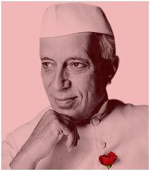

Nehru was born to a family of Kashmiri Brahmans, noted for their administrative aptitude and scholarship, who had migrated to Delhi early in the 18th century. He was a son of Motilal Nehru, a renowned lawyer and leader of the Indian independence movement, who became one of Mohandas (Mahatma) Gandhi’s prominent associates. Jawaharlal was the eldest of four children, two of whom were girls. A sister, Vijaya Lakshmi Pandit, later became the first woman president of the United Nations General Assembly.
Until the age of 16, Nehru was educated at home by a series of English governesses and tutors. Only one of those—a part-Irish, part-Belgian theosophist, Ferdinand Brooks—appears to have made any impression on him. Jawaharlal also had a venerable Indian tutor who taught him Hindi and Sanskrit. In 1905 he went to Harrow, a leading English school, where he stayed for two years. Nehru’s academic career was in no way outstanding. From Harrow he went to Trinity College, Cambridge, where he spent three years earning an honours degree in natural science